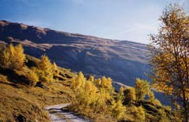

la Clavettaz (2643 m)

Départ : virage 1881 m de la piste (ou Crêt Bettex, 1516 m)
Aller : 5 km, +762 m, 138 min
Retour : 5 km, - 762 m, 89 min
Difficulté : E
Période : juillet - mi octobre
Remarque sur la route d’accès : une route étroite de terre monte sur 5 km de Crêt Bettex à la Vacherie, elle est réservée aux conducteurs avertis. Pour laisser l’accès à l’alpagiste, il faut garer impérativement la voiture avant le chalet, aux épingles 1881 m. On peut aussi la laisser au-dessus du Crêt Bettex à 1516 m (parking difficile à l’Orgière) : le parcours à pied de la route est très beau (c'est la photo !).
Bibliographie : Mérel (page 169, itinéraire plus raide)
Course décrite page 139.
Variante : du point 2399, on peut accéder NE au Faux Ouillon (2 h en AR).
Photo : la piste montant à l'Orgère